Arknights palette tutorial
明日方舟科研配色教程
arkplatte 为明日方舟角色主题科研绘图提供 Python 库和 R 包，适合连续数值、正负差异、分组注释、热图、火山图、UMAP 和 plot1cell 等常见场景。
配色采用固定校准表，覆盖 417 名干员；头像近景优先用于角色本体取色，立绘作为备用来源。函数读取固化后的 palettes.csv，保证同一角色在不同图中保持稳定视觉语义；其中 131 名六星干员保留人工校准表。
色阶生成结合 Lab 感知色彩空间插值、亮度单调约束、双向色阶高亮中点、两端亮度对称和分类色最大距离选择。单细胞数据可用大类绑定角色主题，小类在同一主题内自动挑选距离更合适的颜色，从而兼顾层级关系和类别区分度。
效果展示
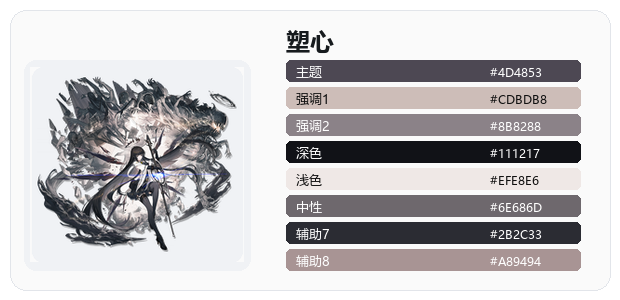
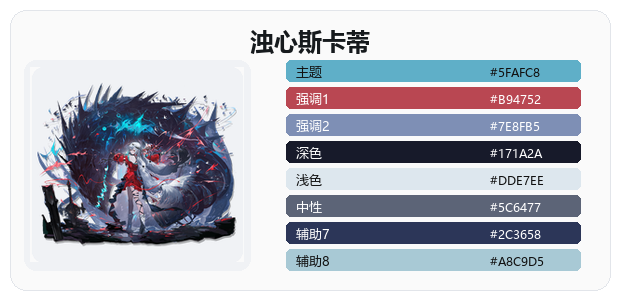
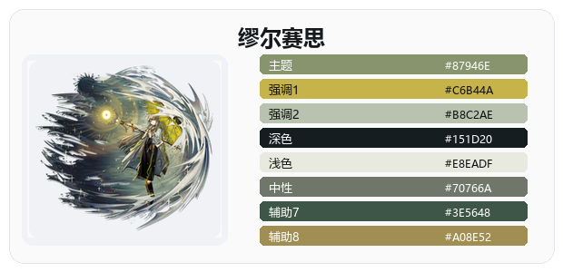
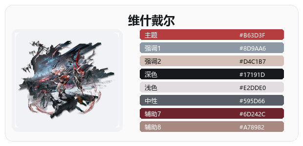
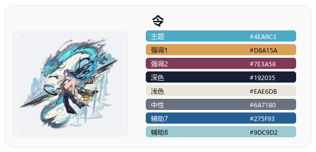
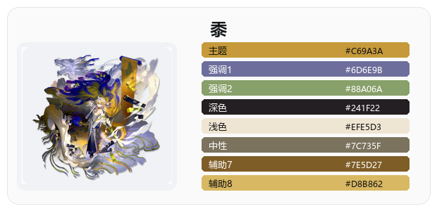
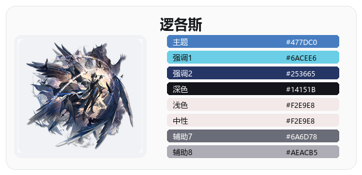
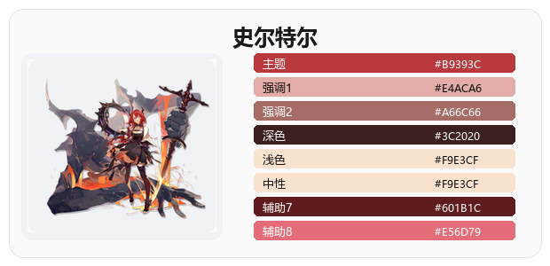
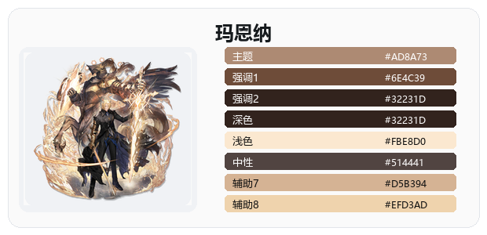
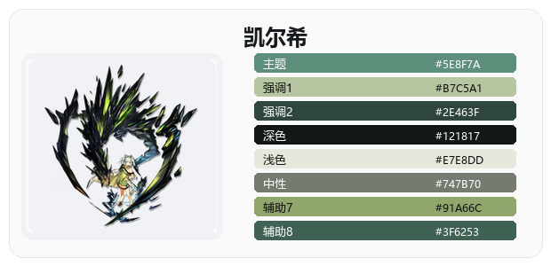
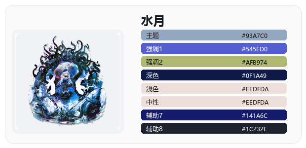
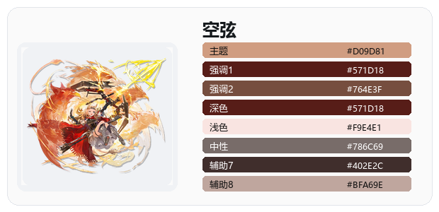
函数及使用方法
arkplatte(name, n)角色核心色。
arkplatte_seq(name, n)单向连续色。
arkplatte_div(name, n)双向连续色。
arkplatte_cat(n)跨角色分类色。
arkplatte_cell(celltypes)细胞类型分类色，适合单细胞分析实验。
arkplatte_sub(map, operator)大类绑定角色，小类按数量自适应选色。
curated_palettes.csv六星人工校准表。
核心色与色阶入口
核心 / 单向 / 双向akp.arkplatte(name, n=None, kind="core")arkplatte(name, n = NULL, type = "core")name：中文名、name_key 或干员编号。n：颜色数量。kind/type："core"、"seq"、"div"。n 时插值到指定数量；可直接切换核心色、单向连续色或双向连续色。单向连续色
0 到 1 / 表达量 / 丰度akp.arkplatte_seq(name, n=256)arkplatte_seq(name, n = 256)name：角色。n：连续色数量，教程示例常用 5 到 10。双向连续色
-1 到 1 / 差异 / 相关系数akp.arkplatte_div(name, n=257)arkplatte_div(name, n = 257)name：角色。n：双向色数量，教程示例常用 7 或 9。跨角色分类色
分组 / 注释 / 图例akp.arkplatte_cat(n, seed=None, large_n="warn", optimize=True)arkplatte_cat(n, seed = NULL, large_n = "warn", optimize = TRUE)n：类别数量。seed：起始偏移。large_n：超过 30 类时的策略。optimize：是否按 Lab 距离优化。细胞类型分类色
单细胞分析实验akp.arkplatte_cell(celltypes, seed=1, large_n="warn")arkplatte_cell(celltypes, seed = 1, large_n = "warn")celltypes：细胞类型列表。seed：分类色偏移。large_n：大类别数策略。大类与小类分层配色
粗分类 / 细分类akp.arkplatte_sub(subtype_map, group_operator, candidates_per_group=96)arkplatte_sub(subtype_map, group_operator, candidates_per_group = 96)subtype_map：大类到小类列表。group_operator：大类到角色。candidates_per_group：每个大类候选色数量。角色名称与信息查询
元数据akp.arkplatte_names(rarity=None)
akp.arkplatte_info(name)arkplatte_names(rarity = NULL)
arkplatte_info(name)rarity：稀有度；设为空值返回全部。name：角色查询键。主题色提取
多角色主色akp.arkplatte_theme(names)arkplatte_theme(names)names：角色列表。绘图接口辅助
Python 色图 / R 预览akp.arkplatte_cmap(name, kind="seq", n=256)arkplatte_show(name, n = NULL)name：角色。kind："seq" 或 "div"。n：颜色数量。import arknights_palette as akp
akp.arkplatte("浊心斯卡蒂", 6)
akp.arkplatte_seq("塑心", 7)
akp.arkplatte_div("浊心斯卡蒂", 7)
akp.arkplatte_cat(8, seed=1)['#5FAFC8', '#B94752', '#7E8FB5', '#171A2A', '#DDE7EE', '#5C6477']
['#F1EBE9', '#DED8DB', '#B1ABB3', '#79747F', '#44414C', '#1F1F27', '#101219']
['#CC6C71', '#D39092', '#EECACC', '#EDEEF2', '#BED7E2', '#76A9BB', '#3993AC']
['#3A3F47', '#D01819', '#E2C55D', '#EBBEC7', '#5CB19C', '#90393B', '#477DC0', '#E47F4C']library(arknightsPalette)
arkplatte("浊心斯卡蒂", 6)
arkplatte_seq("塑心", 7)
arkplatte_div("浊心斯卡蒂", 7)
arkplatte_cat(8, seed = 1)c("#5FAFC8", "#B94752", "#7E8FB5", "#171A2A", "#DDE7EE", "#5C6477")
c("#F1EBE9", "#DED8DB", "#B1ABB3", "#79747F", "#44414C", "#1F1F27", "#101219")
c("#CC6C71", "#D39092", "#EECACC", "#EDEEF2", "#BED7E2", "#76A9BB", "#3993AC")
c("#3A3F47", "#D01819", "#E2C55D", "#EBBEC7", "#5CB19C", "#90393B", "#477DC0", "#E47F4C")Bar chart
div = akp.arkplatte_div("浊心斯卡蒂", 7)
colors = [div[6], div[5], div[1], div[0], "#8F3343"]
ax.axhline(0, color="#AFAFAF")
ax.bar(labels, values, yerr=err, color=colors)div <- arkplatte_div("浊心斯卡蒂", 7)
cols <- c(div[7], div[6], div[2], div[1], "#8F3343")
ggplot(df, aes(group, value, fill = group)) +
geom_col() +
geom_hline(yintercept = 0, colour = "#AFAFAF") +
scale_fill_manual(values = cols)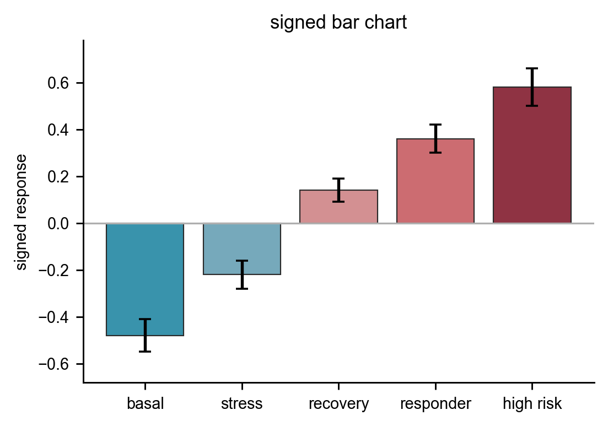
Line chart
colors = akp.arkplatte_seq("塑心", 5)[1:4]
for c, y in zip(colors, series):
ax.plot(x, y, color=c, marker="o")cols <- arkplatte_seq("塑心", 5)[2:4]
ggplot(df, aes(time, value, colour = group)) +
geom_line() +
scale_colour_manual(values = cols)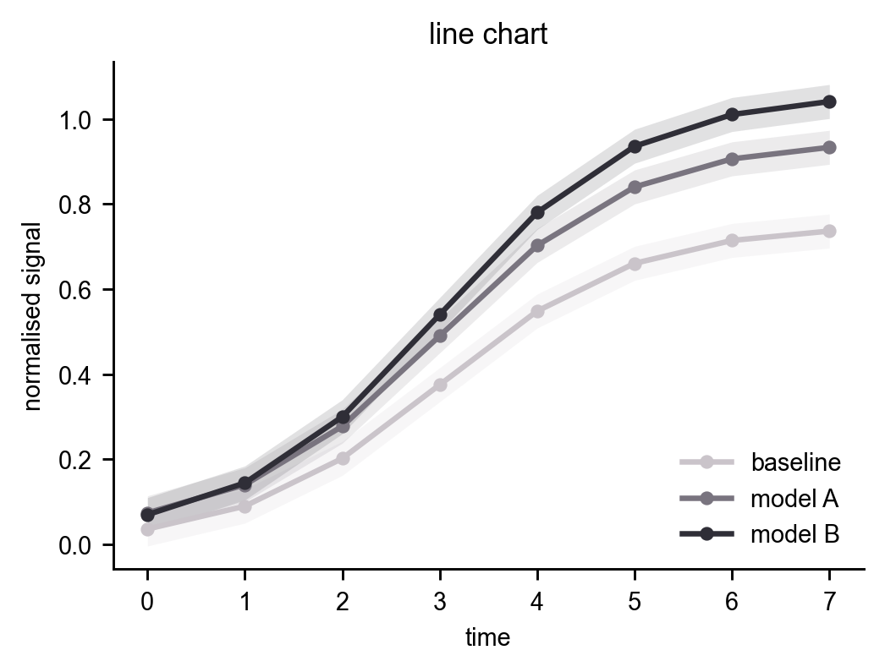
Scatter plot
colors = akp.arkplatte_theme(["凯尔希", "塑心", "乌尔比安"])
ax.scatter(x, y, s=size, color=colors["塑心"], alpha=.68)cols <- arkplatte_theme(c("凯尔希", "塑心", "乌尔比安"))
ggplot(df, aes(x, y, size = score, colour = group)) +
geom_point(alpha = .7) +
scale_colour_manual(values = cols)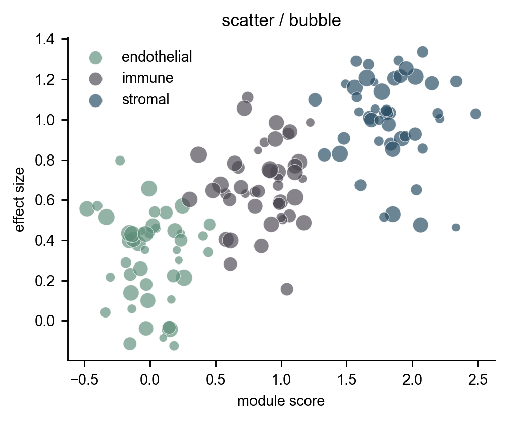
Heatmap
cmap = akp.arkplatte_cmap("乌尔比安", "div", 9)
ax.imshow(mat, cmap=cmap, vmin=-2.4, vmax=2.4)cols <- arkplatte_div("乌尔比安", 9)
ComplexHeatmap::Heatmap(mat, col = circlize::colorRamp2(
c(-2, 0, 2), cols[c(1, 5, 9)]))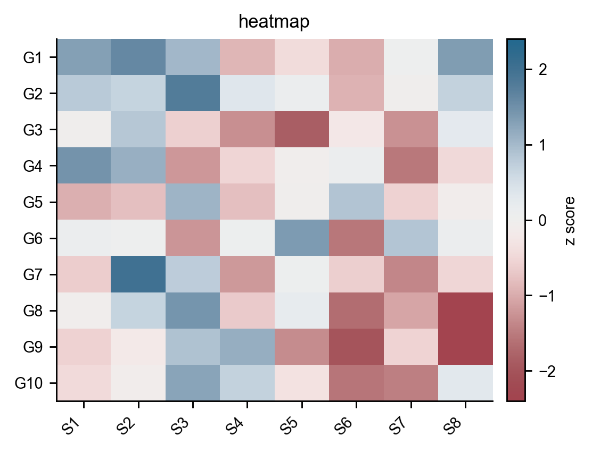
Violin plot
colors = akp.arkplatte_seq("缪尔赛思", 5)[1:]
parts = ax.violinplot(data, showmedians=True)cols <- arkplatte_seq("缪尔赛思", 5)[2:5]
ggplot(df, aes(group, value, fill = group)) +
geom_violin() +
scale_fill_manual(values = cols)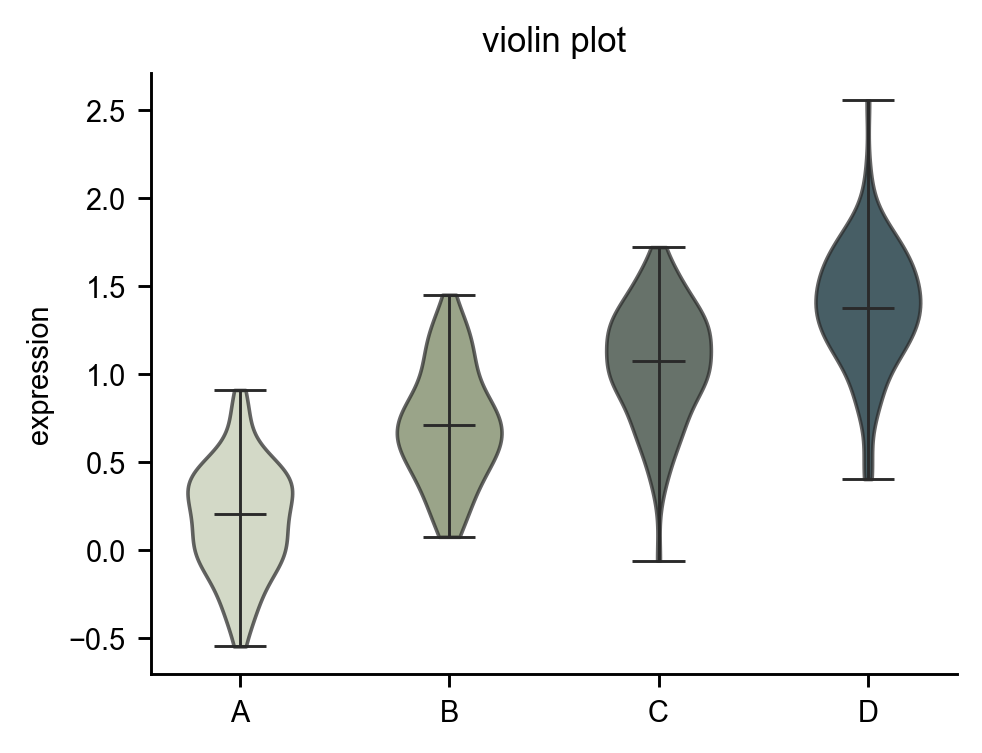
Forest plot
core = akp.arkplatte("维什戴尔", 8)
colors = [core[i] for i in [0, 1, 2, 5, 6, 7]]
print("common_forest:", colors)
ax.axvline(0, color="#B8B8B8")
for i, color in enumerate(colors):
ax.errorbar(effect[i], y[i], xerr=ci[:, i:i+1],
fmt="o", color=color)col <- arkplatte_theme("维什戴尔")
ggplot(df, aes(effect, term)) +
geom_vline(xintercept = 0, colour = "grey75") +
geom_pointrange(aes(xmin = low, xmax = high), colour = col)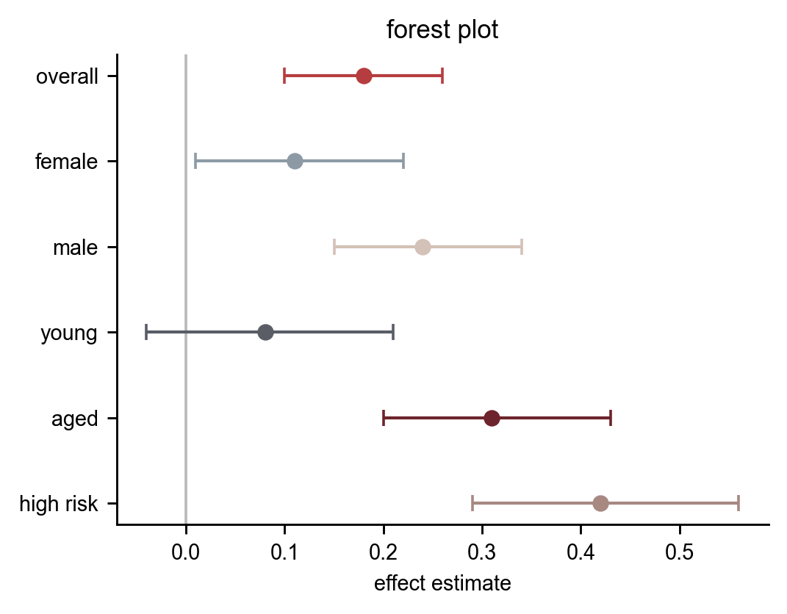
Volcano plot
div = akp.arkplatte_div("浊心斯卡蒂", 7)
colors = np.full(log_fc.shape, "#B8BEC6", dtype=object)
colors[sig_down] = div[-1]
colors[sig_up] = div[0]
print("bio_volcano:", div)bio_volcano: ['#CC6C71', '#D39092', '#EECACC', '#EDEEF2',
'#BED7E2', '#76A9BB', '#3993AC']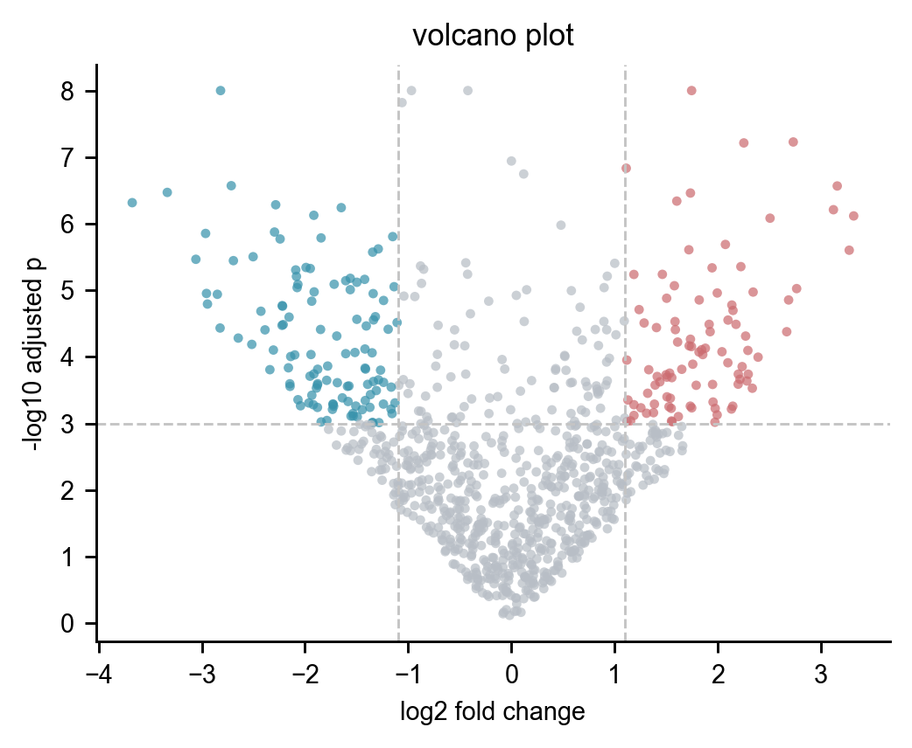
Marker dot plot
dot_cols = akp.arkplatte_seq("逻各斯", 9)
cmap = akp.arkplatte_cmap("逻各斯", "seq", 128)
print("bio_dotplot:", dot_cols)bio_dotplot: ['#F3ECEB', '#DFE2F4', '#B8C7EB', '#86A2D7',
'#437ABD', '#21528C', '#003262', '#001D44', '#001437']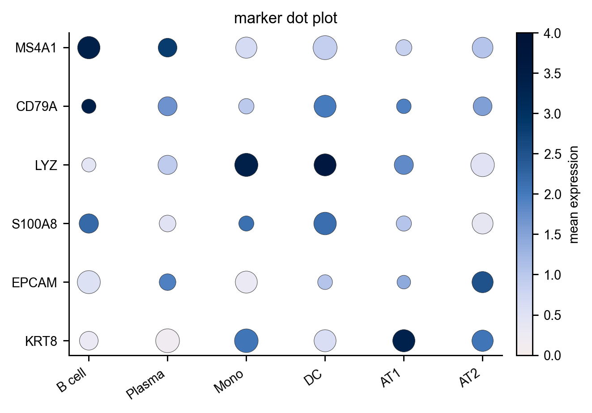
Enrichment
operators = ["蕾缪安", "玛恩纳", "史尔特尔", "水月", "空弦", "望"]
colors = akp.arkplatte_theme(operators)
print("bio_enrichment:", colors)bio_enrichment: {'蕾缪安': '#E99FA4', '玛恩纳': '#AD8A73',
'史尔特尔': '#B9393C', '水月': '#93A7C0',
'空弦': '#D09D81', '望': '#EFE5DC'}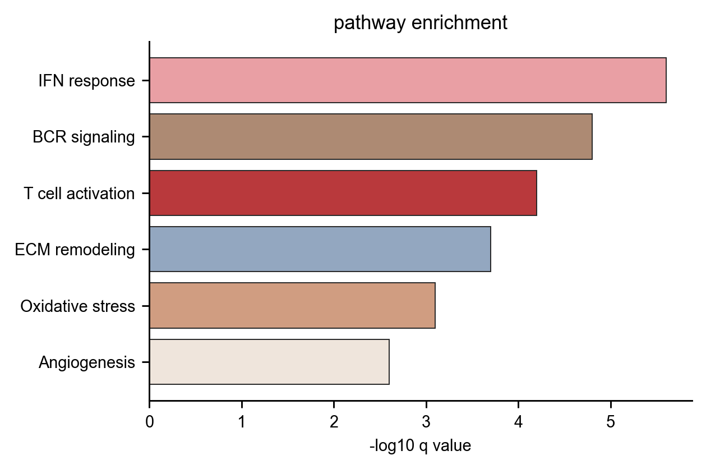
PCA
operators = {"control": "丰川祥子", "treated": "新约能天使", "relapse": "史尔特尔"}
colors = akp.arkplatte_theme(list(operators.values()))
print("bio_pca:", colors)bio_pca: {'丰川祥子': '#6B7896', '新约能天使': '#D01819', '史尔特尔': '#B9393C'}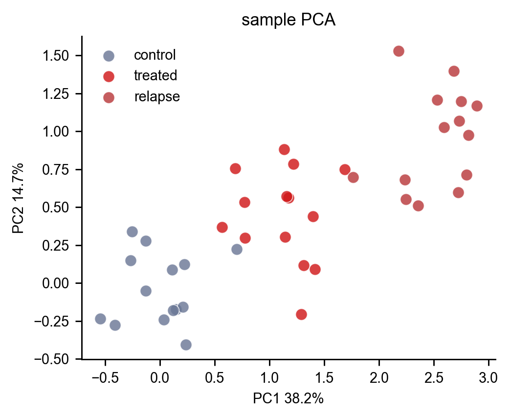
Cell-type mapping
单细胞示例中，粗层级使用 compartment，细层级使用 cell_type。
arkplatte_sub() 会按每个大类下的小类数量扩展候选色，从角色核心色、单向连续色和双向连续色中挑选距离更远的颜色。
| 数据集 | 粗层级 | 角色主题 |
|---|---|---|
lung10k | endothelial | 凯尔希 |
lung10k | epithelial | 浊心斯卡蒂 |
lung10k | immune | 塑心 |
lung10k | stromal | 乌尔比安 |
kidney50k | PT | 缪尔赛思 |
kidney50k | lymphoid | 令 |
kidney50k | myeloid | 黍 |
kidney50k | non_PT | 维什戴尔 |
| 数据集 | 小类角色池 |
|---|---|
lung10k |
凯尔希、浊心斯卡蒂、塑心、乌尔比安、丰川祥子、玛恩纳、蕾缪安、新约能天使、望、史尔特尔、空弦、水月、逻各斯。 |
kidney50k |
缪尔赛思、令、黍、维什戴尔、丰川祥子、玛恩纳、蕾缪安、新约能天使、望、史尔特尔、空弦、水月、逻各斯。 |
# subtype_map: 大类 -> 细胞小类
# group_operator: 大类 -> 主角色
# fine_operator: 细胞小类 -> 角色池中的角色
fine_colors = akp.arkplatte_sub(operator_subtype_map, operator_identity)
cluster_palette = [fine_colors[label] for label in fine_order]
track_palette = list(coarse_colors.values()) + akp.arkplatte_cat(64, large_n="force")UMAP
UMAP（统一流形近似与投影）示例使用 kidney50k 的 X_umap。
adata = ov.read(str(fetch(ov, "kidney50k")))
print(adata)
print(adata.obs[["compartment", "cell_type", "donor_id", "sex", "tissue", "cell_state"]].head())
print(adata.obs["compartment"].value_counts())
print(adata.obs["cell_type"].nunique())AnnData object with n_obs × n_vars = 40268 × 32088
obs columns include: donor_id, compartment, broad_celltype, cell_type, sex, tissue, cell_state
compartment counts: PT 27845, lymphoid 6456, non_PT 4620, myeloid 1347
cell_type count: 29palettes = build_hierarchical_palettes(
adata, dataset="kidney50k",
coarse_col="compartment", fine_col="cell_type")
print(palettes["fine_operator"])
print(palettes["fine_colors"])
cell_type = adata.obs["cell_type"].astype(str)
xy = adata.obsm["X_umap"]
colors = palettes["fine_colors"]
ax.scatter(xy[:, 0], xy[:, 1],
c=[colors[x] for x in cell_type], s=1.5)fine_operator: {'podocyte': '新约能天使', 'renal principal cell': '逻各斯', ...}
fine_colors: {'podocyte': '#D01819', 'renal principal cell': '#477DC0', ...}cols <- arkplatte_sub(subtype_map, group_operator)
Seurat::DimPlot(seu, reduction = "umap",
group.by = "cell_type", cols = cols)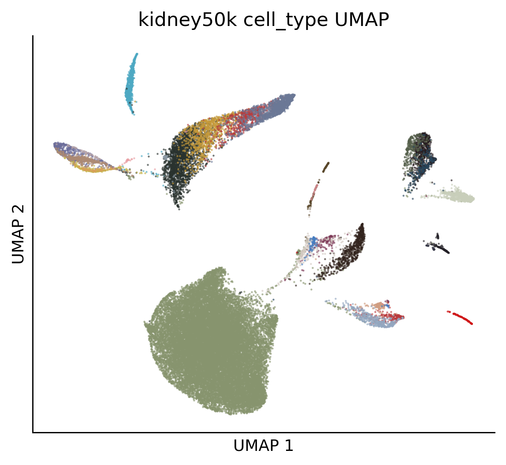
cell_type 上色。plot1cell
palettes = build_hierarchical_palettes(
adata, dataset="kidney50k",
coarse_col="compartment", fine_col="cell_type")
cluster_palette = palettes["cluster_palette"]
track_palette = palettes["track_palette"]
print("fine_operator:", palettes["fine_operator"])
print("fine_colors:", palettes["fine_colors"])
print("cluster_palette:", cluster_palette)
ov.pl.plot1cell(
adata,
clusters="cell_type",
basis="X_umap",
tracks=["compartment", "tissue", "sex", "cell_state"],
cluster_palette=cluster_palette,
track_palette=track_palette,
bg_color="white")kidney50k fine_operator:
{'epithelial cell of proximal tubule': '缪尔赛思',
'podocyte': '新约能天使',
'renal beta-intercalated cell': '空弦',
'renal intercalated cell': '水月',
'renal principal cell': '逻各斯', ...}
kidney50k cluster_palette:
['#4EA9C3', '#29322E', '#C69A3A', '#271D20', '#6D6E9B',
'#C6B44A', '#87946E', '#C8CEBA', '#7E3A58', ...]circ_data <- plot1cell::prepare_circlize_data(seu)
plot1cell::plot_circlize(
circ_data,
col.use = palettes$cluster_colors,
bg.color = "white")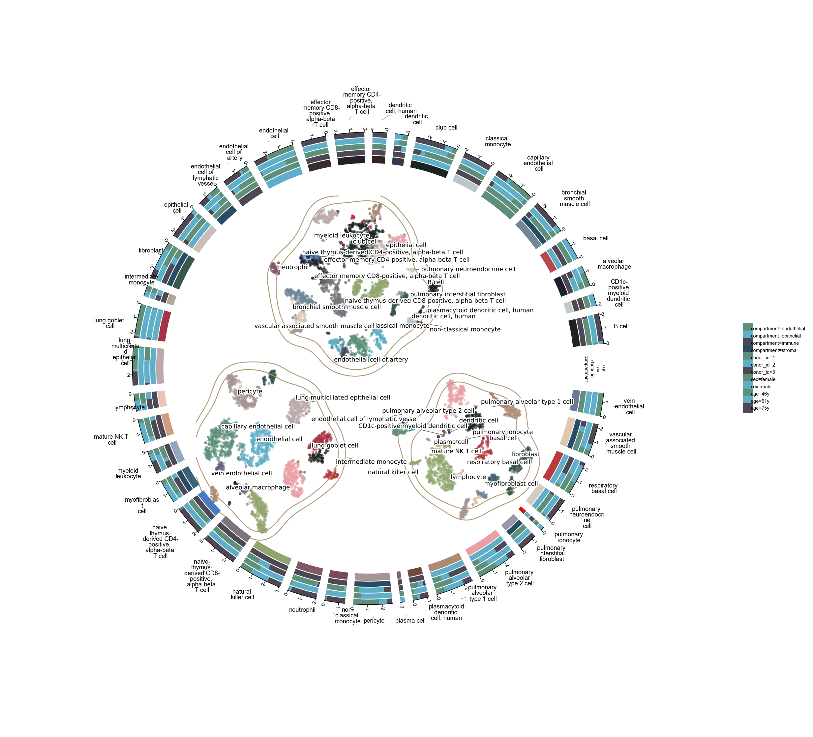
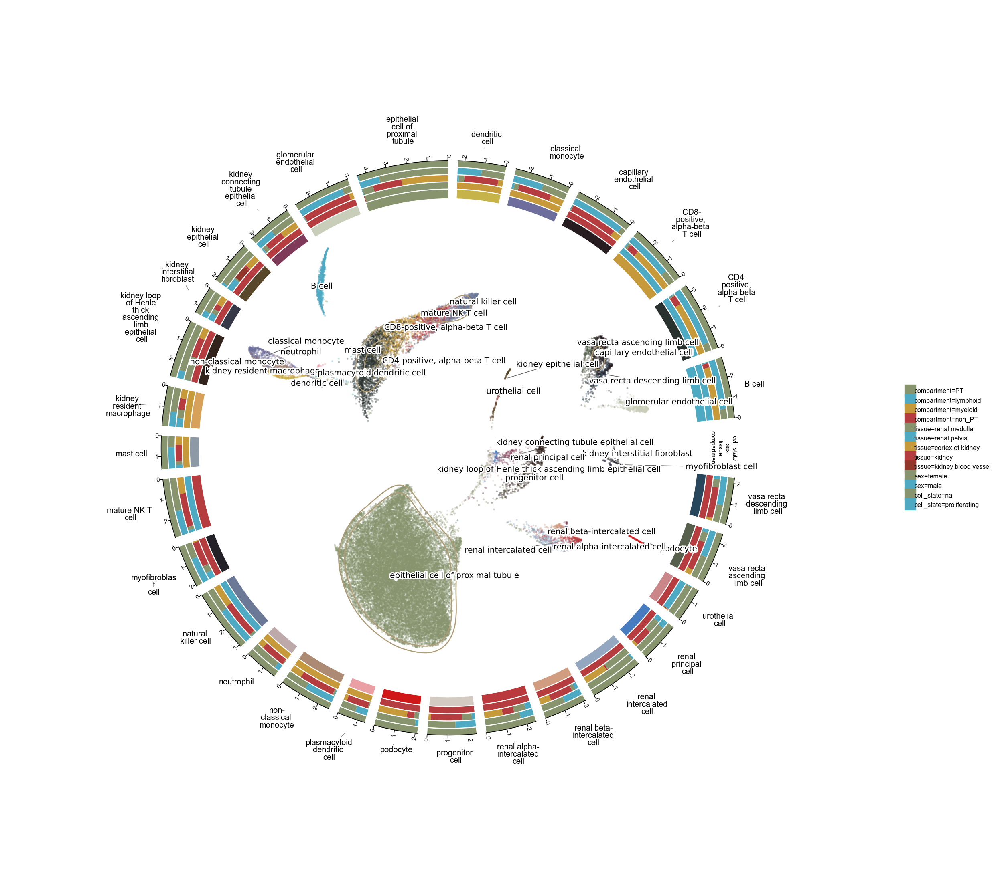
Scripts and outputs
scripts/python_common_figures.py：常见图。
scripts/python_single_cell_umap.py：单细胞 UMAP。
scripts/python_omicverse_plot1cell_lung_kidney.py：plot1cell。
scripts/r_common_figures.R：R 语言模板。
common_figures_palette_log.txt：常见图实际用色输出。
plot1cell_palette_log.txt：plot1cell 数据预览与配色输出。
umap_palette_log.txt：UMAP 数据预览与配色输出。
figures/：PNG 与 SVG 输出。